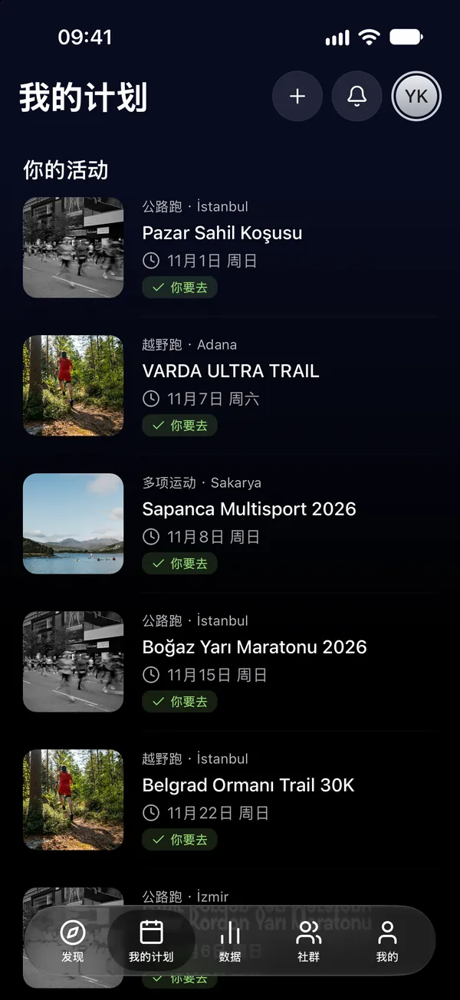
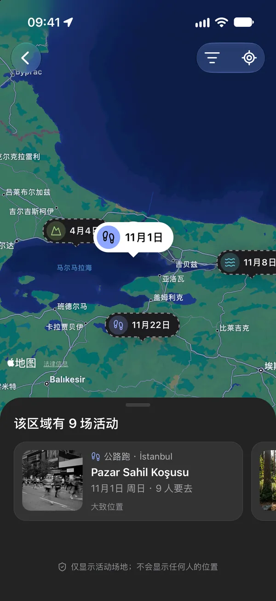
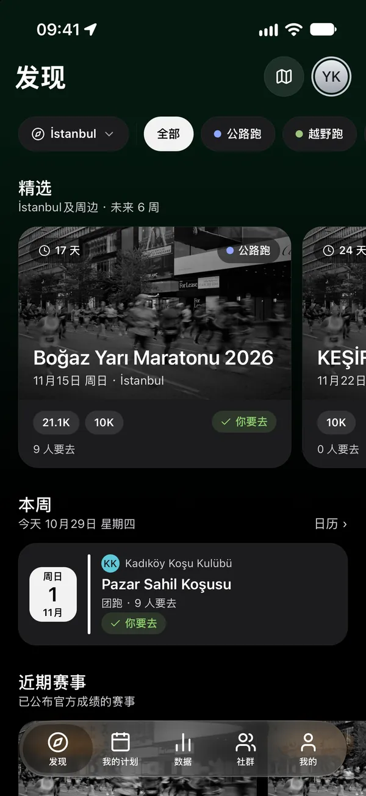
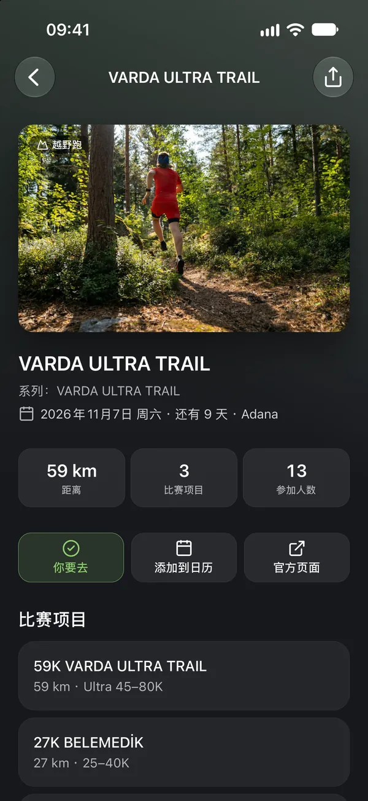
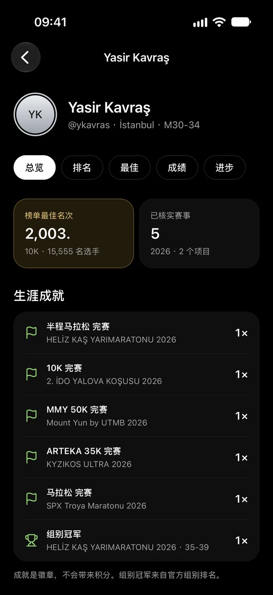
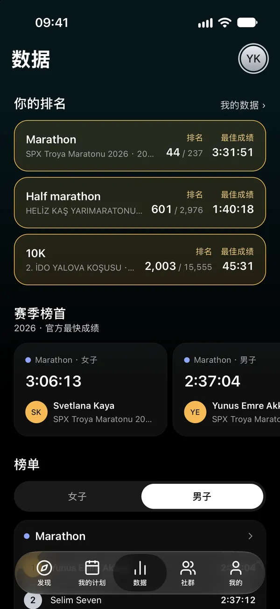
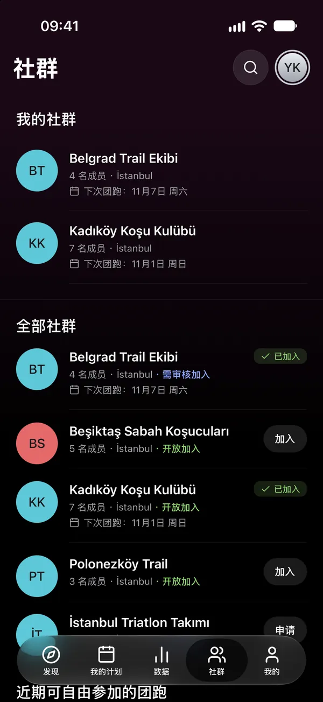

06日历
同步到日历，始终最新
一键把活动添加到日历，或以实时订阅的方式把计划同步到手机日历；日期变动时，日历也会随之更新。

公路跑 · 越野跑 · HYROX · 铁人三项 · 公开水域
找到你的比赛，书写你的生涯。
按城市和项目发现路跑、越野跑、HYROX、铁人三项和公开水域赛事以及俱乐部团跑。看看谁要去，让官方成绩记入你的生涯。

01发现
按城市和项目浏览赛事和俱乐部团跑，在活动地图上一目了然。


02我的计划
点“我要去”，活动就会加入你的计划。看看你关注的人要去哪里，并自己决定谁能看到你的计划。
谁能看到你的计划？

03生涯
成绩来自主办方的官方名单。选择你的比赛，找到你的成绩，点“这是我”；通过审核后，会记入你的生涯和个人最佳。

04数据
榜单由允许排名的计时公司的官方成绩组成。查看你所在项目和赛制的赛季榜首，以及你的位置。

05社群
找到你的俱乐部并加入；在“我的计划”里查看团跑，不错过任何公告。开放的团跑无需加入俱乐部也能参加。

06日历
一键把活动添加到日历，或以实时订阅的方式把计划同步到手机日历；日期变动时，日历也会随之更新。

07关注与通知
关注跑者和俱乐部。计划中的比赛有变动、你的成绩通过审核或俱乐部发布公告时，你都会收到通知。
下载 Raceport，开始规划你的赛季。